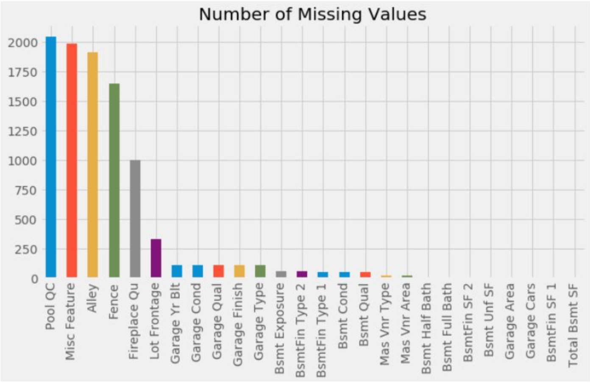
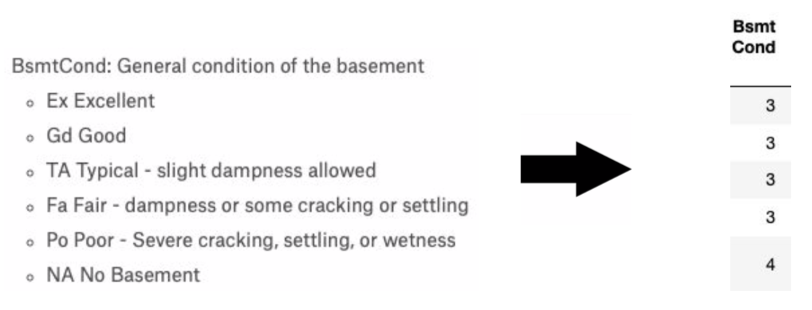
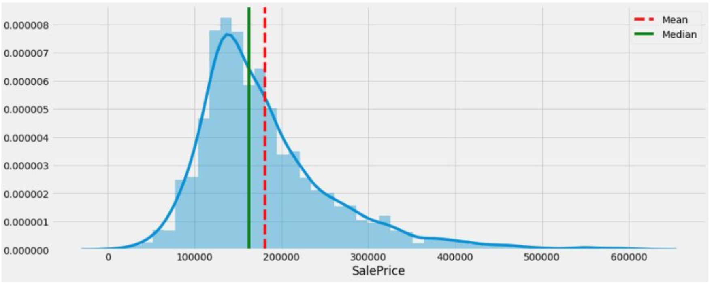
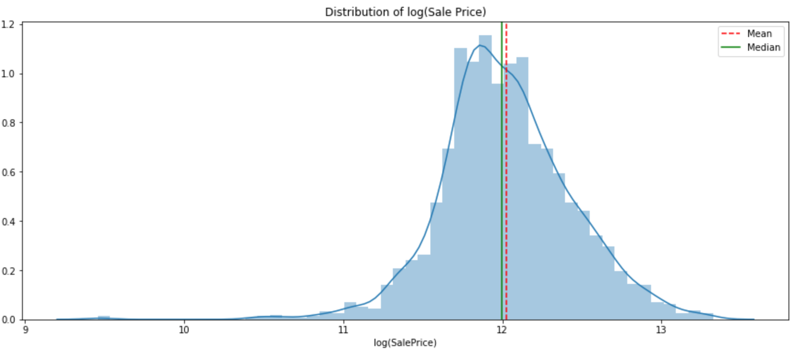
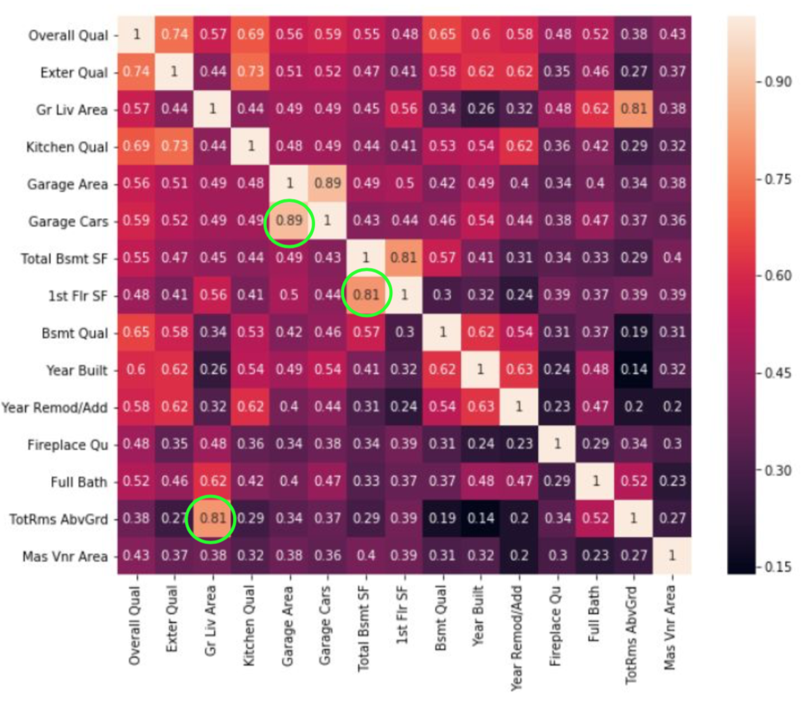
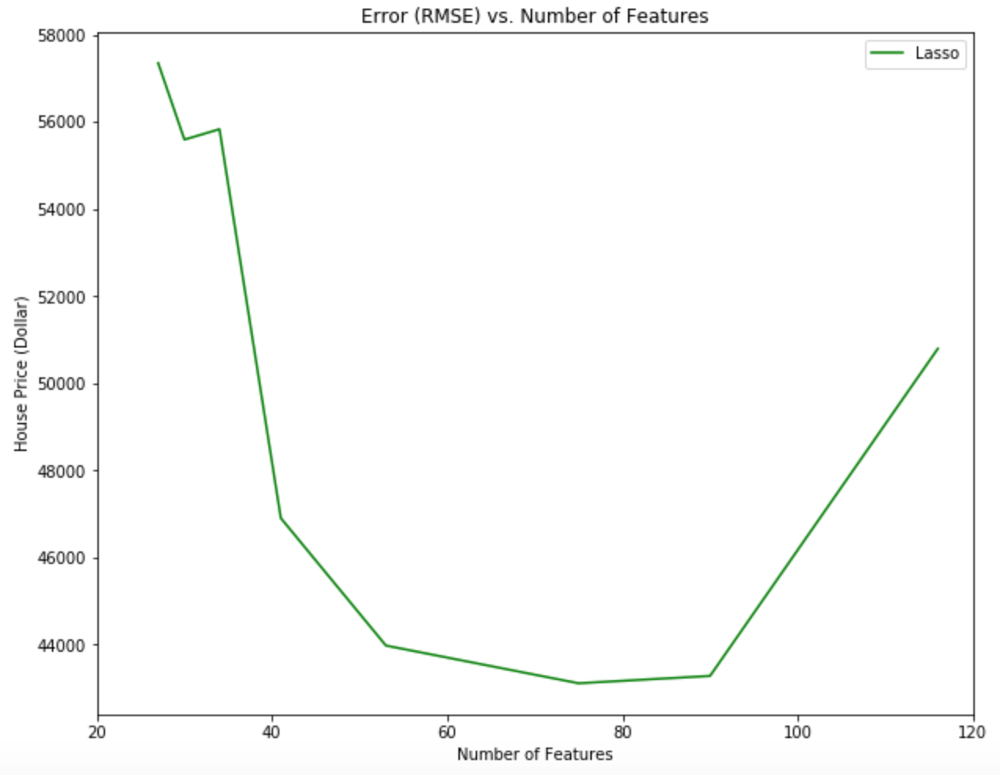
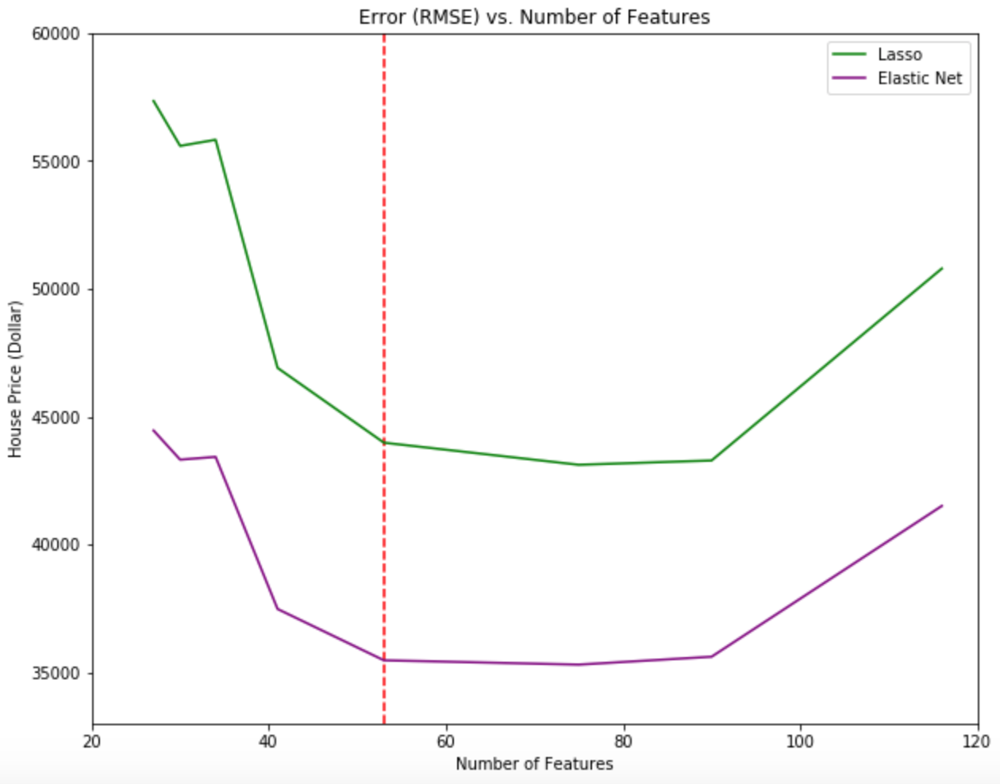
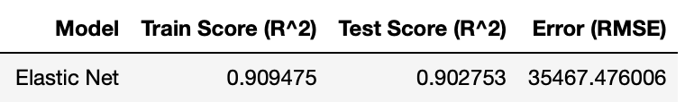

Classifying Subreddits
Introduction
Reddit is an American social news aggregation, web content rating, and discussion website founded by Steven Huffman and Alexis Ohanian in 2005. Registered members submit content to the site such as links, text posts, and images which are organized by subject into user-created boards called "subreddits". Since there are many subreddits covering a variety of topics including news, science, movies, music, and image-sharing, creating a system that could classify posts into each different subreddits might be helpful in the future. In order to demonstrate the filtering system, I obtained the data (title and text) from republican and democrat subreddit and created a classifying model using natural language processing combining with machine learning algorithms.
Importing the Data
This is the portion of data I obtain from Kaggle using the code. The Ames housing data contained 2050 rows and 81 columns. There were 39 numeric columns which contained information such as the year of the house built, garage area and pool area. Rest of 42 columns were categorical columns which contained information such as neighborhood, house style, and garage quality. From the picture above, the first issue of the data was the missing value in columns such as alley. The data also needs to convert the categorical columns into numeric in order to use the features in the regression.
Missing Data

The first issue with the data is the missing values. The graph above shows the of the number of missing value in each column. When we look deeper into the columns with missing values, we can see that those values are not actually missing, but just cannot be measured or not applicable to be measured. For example, over 2000 missing values in the pool quality column can be replaced with NA (not applicable) if the corresponding pool area column show value of zero. This means that there is no pool in the house, so measuring the pool quality is not applicable. After looking into all of the missing values columns, I decided to replace the missing value in numeric columns to zero and NA (not applicable) to categorical columns.
Data Cleaning

Since we wanted to use regression to predict the sale price of the house, the categorical columns need to be changed to numbers. One of the ways to change the values into numbers is to identify ordinal data. Ordinal data is a categorical data type where there is a clear ordering of the values. For example, basement quality is ordinal data which each category can be represented with numbers: Excellent (5), Good (4), Typical (3), Fair (2), Poor (1) and None (0). There are 19 ordinal data columns and 2 binary data columns. Binary columns such as central air conditioning can be represented as yes (1) or no (0).
Sale Price (Target Variable)

Analysis of the target variable (sale price) is a crucial step before building a model since any type of skewness will have a negative effect on the predictions. The graph above shows the distribution of the target variable where the shape of the distribution is skewed. The distribution is skewed to the left where median (green line) is less than the mean (red line). In order to fix this skewed distribution, log transformation is applied to the target variable.

After the log transformation, we can see that the median (green line) shifted toward the mean (red line). This means that the distribution is now less skewed and closer to be normally distributed. Therefore, this transformation will reduce the negative effect on the predictions.
Correlation

Another crucial step before modeling is to check the multicollinearity. Multicollinearity is a phenomenon in which one feature (predictor) can be linearly predicted from the other features. This can make the model unstable and difficult to interpret. The graph above shows some of the features with high correlation such as garage area and garage cars. These are the features that showed a high correlation:
- Total Bsmt SF and 1st Flr SF
- Pool Area and Pool QC
- Fireplace and Fireplace Qu
- Garage Yr Blt and Garage Qual
- Garage Area and Garage Cars
- Garage Qual and Garage Cond
- Fireplace Qu
- Garage Cond
- Garage Cars
- Pool QC
Selecting Features (Regularization)

Since the data have so many features, we want to remove features that do not help to predict the sale price of the house. Instead of checking each column and the correlation to the sale price, the Lasso regularization method should be used. Lasso (least absolute shrinkage and selection operator) is a regression analysis method that helps to reduce features. The graph above shows the difference between true house price and predicted house price (error) of the test model versus the number of the features. The optimal number of features is 75 with error of $43115.79.

Another method similar to Lasso regularization is the Elastic Net regularization is a regression method that linearly combines the lasso and ridge methods. The method with the lowest error was the Elastic Net method with 53 features.
Final Model

The best model to predict the sale price of the house in Ames, Iowa is the Elastic net model with 53 features such as the total area of the house, overall quality, and neighborhoods.
Features that help the sale price to increase (positive coefficient)
- Gr Liv Area: above ground living area in square feet
- Total Area: area of basement, 1st floor and 2nd floor in square feet
- Neighborhood Crawfor: Crawford neighborhood in Ames, Iowa
- Exterior 1st_BrkFace: Brick Face exterior covering on house
Features that help the sale price to decrease (negative coefficient)
- Roof Matl_ClyTile: Clay or tile roof material
- Functional_Sal: Home functionality rating (salvage only)
- Functional_Sev: Home functionality rating (severely damaged)
- Neighborhood_Edwards: Edwards neighborhood in Ames, Iowa
For more detail analysis and code, Check out my Github